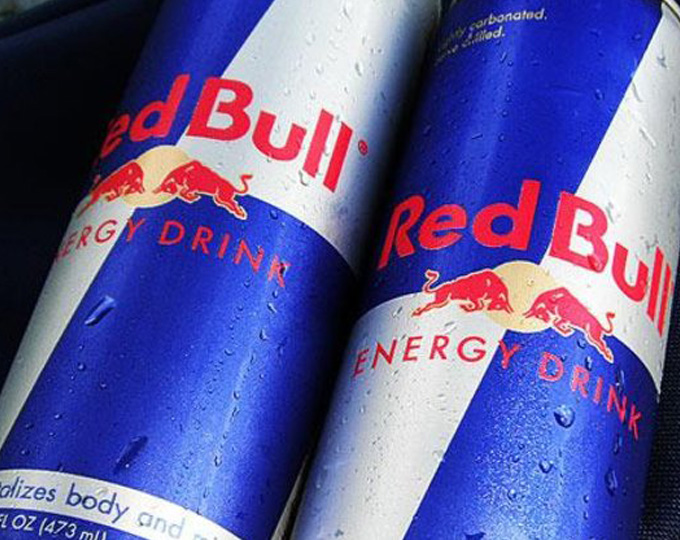

홈 > 브랜드 매거진 > 레드불
레드불
레드불(Red Bull)은 1987년 오스트리아에서 출시된 세계 최대 에너지음료 브랜드이다.
산업 분야 식음료 · 공개 등급 자료 기반 · 브랜드 평가 4.3 ★

한눈에 보는 브랜드
디트리히 마테시츠가 태국 출장 중 접한 자양강장 음료 크라팅댕에서 영감을 얻어, 1987년 4월 오스트리아에서 출시한 에너지드링크 브랜드다. 사실상 글로벌 에너지드링크 시장 자체를 처음 개척했고, 2024년 기준 약 127억 캔을 팔아 연 매출 약 112억 유로 규모로 성장했다.
출시 이후 누적 판매량은 1천억 캔을 넘어섰다.
브랜드 관점
몬스터가 2015년 코카콜라 유통망에 올라타 170여 개국으로 빠르게 확장한 반면, 레드불은 직접 유통과 절제된 제품군을 고수하며 글로벌 약 43% 점유율을 지켰다. 가장 두드러진 차별점은 '에너지드링크를 파는 미디어 기업'이라는 자기규정으로, 매출의 약 3분의 1을 마케팅에, 그중 절반 이상을 자체 콘텐츠 제작에 투입해 포뮬러 원과 익스트림 스포츠를 묶은 콘텐츠 제국을 세웠다.
창업자가 2022년 별세한 뒤 아들 마크 마테시츠가 49% 지분을, 태국 유위티야 가문이 51%를 쥐면서 지배구조 긴장이 표면화됐고, 2025년 크리스티안 호너 감독 경질이 그 단면으로 읽힌다. 한국에서는 동서가 판권을 맡았으나 식품 규제로 카페인을 낮췄고 높은 가격 부담이 과제로 남아 있다.
시작과 성장
1980년대 마케팅 임원이던 디트리히 마테시츠는 태국 출장 중 시차 피로를 풀어준 자양강장 음료 크라팅댕을 맛봤다. 그는 이 음료를 만든 태국의 찰레오 유위티야 가문과 손잡고 1984년 합작 회사를 세웠으며, 양측이 각각 5억 원 안팎(50만 달러)을 투자해 49%씩 나누고 찰레오의 아들이 잔여 지분을 갖는 구조를 만들었다.
원액에 탄산을 더하고 유럽 입맛에 맞게 다듬어 1987년 4월 1일 오스트리아에서 정식 출시했다. 초기엔 낯선 범주였지만 포뮬러 원, 절벽 다이빙, 스카이다이빙 같은 익스트림 스포츠 후원과 자체 이벤트로 인지도를 키우며 175개국 이상으로 뻗어 나가 글로벌 아이콘이 됐다.
브랜드 아이덴티티
핵심 가치는 활력, 도전, 한계 돌파다. 로고는 황금빛 태양을 배경으로 맞붙는 두 마리 붉은 황소로, 태국 크라팅댕 도상에서 비롯됐고 힘과 인내, 에너지를 상징하며 1987년 이후 거의 바뀌지 않았다.
대표 슬로건 '레드불, 날개를 펼쳐줘요(Gives You Wings)'는 무한한 에너지와 비범함의 약속을 압축한다. 타깃은 학생, 운동선수, 야간 근무자 등 활력이 필요한 젊은 세대이며, 브랜드 보이스는 대담하고 모험적이며 위트 있는 톤을 일관되게 유지한다.
제품과 서비스
오리지널 에너지드링크를 중심으로 무설탕 슈가프리, 제로, 그리고 다양한 맛을 담은 에디션(레드·퍼플 에디션, 화이트피치, 와일드베리 등)으로 구성된다. 캔 용량은 250ml를 기본으로 355ml, 473ml까지 다양하다.
가격대는 일반 탄산음료보다 높은 프리미엄 포지션이며, 편의점·주유소·대형마트 등 즉석 음용 채널에서 눈에 잘 띄는 진열을 확보하는 전략을 쓴다.
사람들
창업자: 디트리히 마테시츠와 찰레오 유위티야(Dietrich Mateschitz & Chaleo Yoovidhya)가 1984년 공동설립했다. 소유: 비상장(레드불 GmbH), 찰럼 유위티야 51%·마크 마테시츠 49%.
현재 상태
소유는 태국 유위티야 가문(약 51%)과 창업자 마테시츠 가문(약 49%)으로 나뉜다. 본사는 오스트리아 푸슐암제(Fuschl am See)에 있으며 60여 개국 출신 2천여 명이 일한다.
175개국 이상에서 판매되고 연 판매량은 2024년 약 127억 캔, 2025년 약 139억 캔으로 집계됐다. 세부 재무 내역과 일부 지분 이동 등 비공개 정보는 공식적으로 확인되지 않았다.
타임라인
BI/CI 변천사
함께 읽을 브랜드
hy
hy
식음료 · 자료 기반hyhy(에치와이)는 1969년 한국야쿠르트로 설립돼 2021년 현재 사명으로 바꾼 대한민국의 발효유·유통전문 기업이다.
MM
메가엠지씨커피
식음료 · 자료 기반메가엠지씨커피메가엠지씨커피는 합리적 가격과 대용량을 앞세운 한국의 저가 커피 프랜차이즈다. 2015년 첫 매장을 연 뒤 빠른 가맹 확장으로 국내 최대급 매장 수를 갖춘 브랜드로...
맥도날드는 가장 평범한 소비재를 세계 어디서나 읽히는 대중문화의 기호로 바꾼 브랜드다. 햄버거와 감자튀김은 단순한 메뉴지만, 맥도날드는 속도, 표준화, 접근성, 익숙...
Be
Bezi
식음료 · 편집 검수BeziBezi는 2024년에 기록된 Food Brands 계열의 브랜드 아이덴티티 사례입니다. Red Antler가 아이덴티티 작업의 디자이너로 기록되어 있습니다. 공개...
 식음료 · 매거진 완성앱솔루트
식음료 · 매거진 완성앱솔루트앱솔루트는 보드카 병 하나를 광고와 예술의 반복 가능한 캔버스로 만든 브랜드다. 제품 형태의 일관성을 유지하면서도 캠페인마다 다른 문화적 해석을 입혀, 단순한 병을...
Fi
Fibe
식음료 · 편집 검수FibeFibe는 2024년에 기록된 Soft Drinks 계열의 브랜드 아이덴티티 사례입니다. Analogue가 아이덴티티 작업의 디자이너로 기록되어 있습니다. 공개 섹션...
Ha
Half Day
식음료 · 편집 검수Half DayHalf Day는 2025년에 기록된 Beverage 계열의 브랜드 아이덴티티 사례입니다. Earthling Studio가 아이덴티티 작업의 디자이너로 기록되어 있습...
Hi
Hip Pop
식음료 · 편집 검수Hip PopHip Pop는 2025년에 기록된 Beverage 계열의 브랜드 아이덴티티 사례입니다. Robot Food가 아이덴티티 작업의 디자이너로 기록되어 있습니다. 공개...